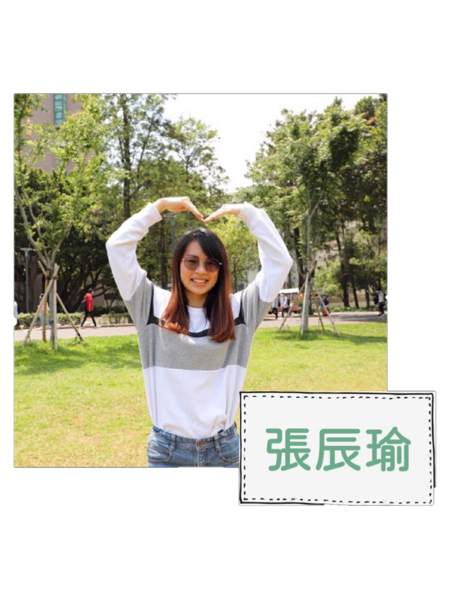
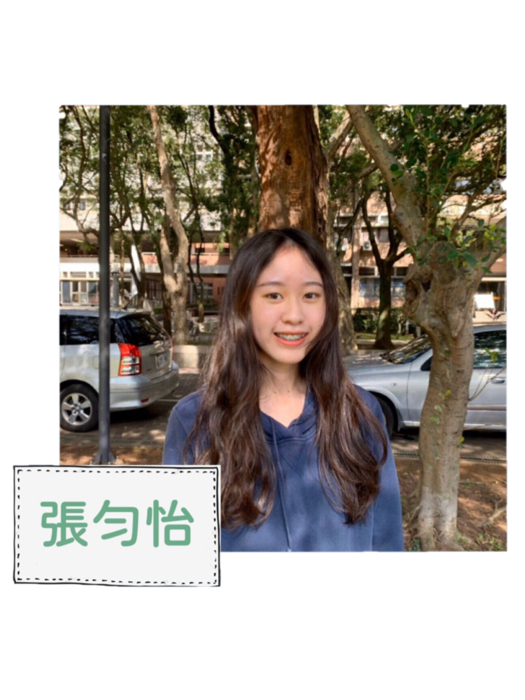
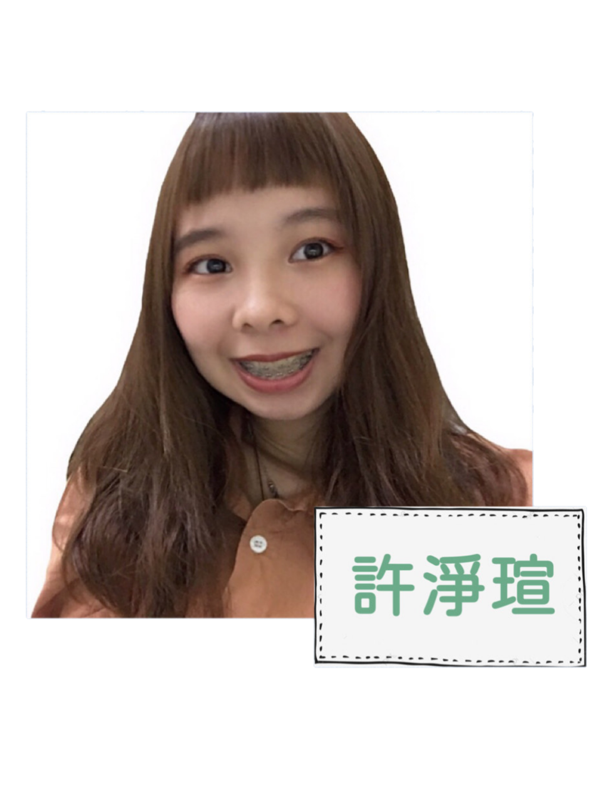
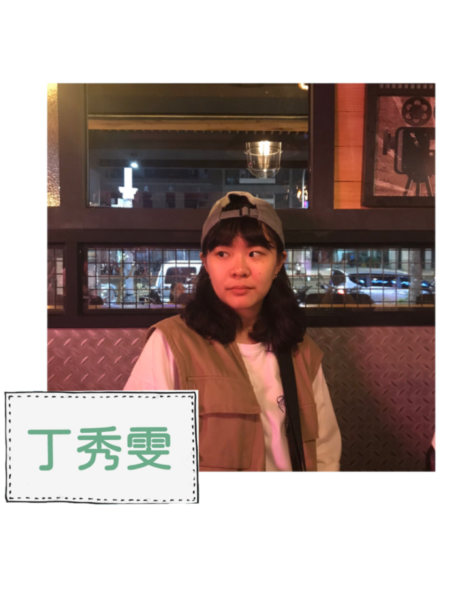

關於我們

興趣：彈鋼琴、吹長笛、聽西洋音樂🎼
工作內容：美工發想、內容構想。
心得：一開始聽到多媒體程式設計,以為會跟以往學過的程式一樣艱深
又枯燥乏味,經過半個學期的學習,這門多媒體程式設計顛覆我對程式
的刻板印象,透過不同的css語法設計出獨一無二的網頁,這種感覺真的很奇妙,
雖然為了完成心目中的理想網頁往往需要花上好幾小時,
但只要最後能設計出屬於自己的獨特網頁,就覺得一切都值得!

興趣：看小說、羽毛球🏸、聽音樂
工作內容：網頁設計排版、內容構想。
心得：透過這次期中報告發現其實拍攝影片不是我們想像中那麼簡單，
從事先的腳本到後來實際拍攝都是需要慢慢去協調的。
製作網頁需要非常有耐心和細心的去調整整個版面配置，
在一開始的版面設計也很費時，累歸累但很開心在這堂課中收穫滿滿！

興趣：遛狗🐶、散步、挖美食
工作內容：影片剪輯、網頁設計排版、內容構思。
心得：以前可能只是在口語或網路文章上認識多媒體這個名詞，
沒辦法講出一個正確的定義。透過這堂課直接實作，大量練習，
用程式語言撰寫出多種與使用者互動性的網頁，讓我更了解多媒體的定義。
資訊報炸時代的我們很有幫助。以及影片拍攝過程，體驗非常有趣!

興趣：跳舞💃、聽音樂
工作內容：影片剪輯、內容構思。
心得：從上學期的期末分組看到甲班的網站頁面，就覺得多媒體
程式設計會與之前一直運用到邏輯的程式語言，更需要自己主觀
的設計感，把腦袋裡的網頁畫面運用css 語言去呈現，讓大家了解
到我的想法。雖然這過程中會遇到一些挫折，像是排版一直狂出問題，
以及跑版的時候，但是慢慢地去找每個區段，當自己找到問題所在
與解決問題時，心裡是很開心的！